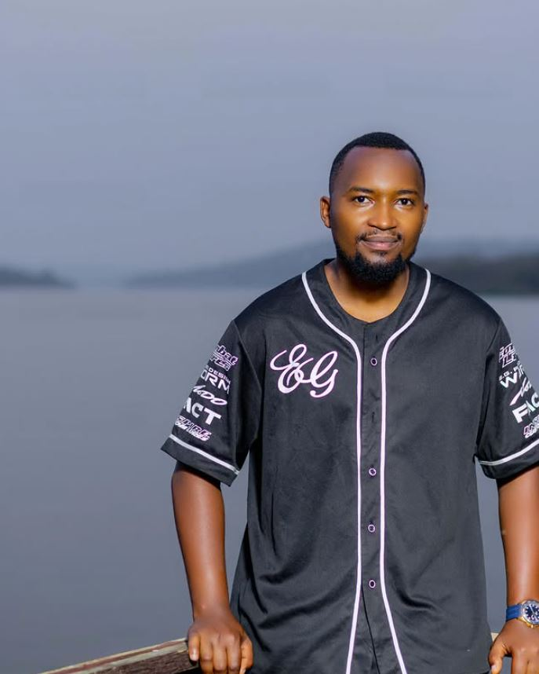

First Steps
Started photography with a basic DSLR, documenting life in Rwanda
Capturing moments between Norway and Rwanda

Welcome to my world of photography! I'm passionate about capturing life's most precious moments and turning them into timeless memories. With years of experience behind the lens, I've developed a unique style that combines artistic vision with technical expertise.
Started photography with a basic DSLR, documenting life in Rwanda
Won my first international photography award
Expanded my horizons with Nordic landscape photography
Working between two continents, capturing diverse stories
I believe that photography is more than just capturing images – it's about telling stories, preserving memories, and connecting cultures. Every photograph should evoke emotion and create a lasting impression.
Seeing beauty in everyday moments and unexpected places
Photography isn't just my profession; it's my passion and way of life.
Each shot is an opportunity to create something unique and beautiful.